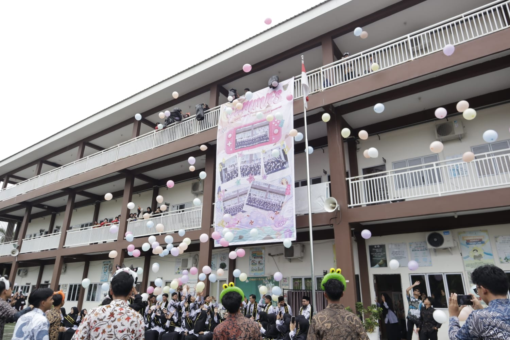

SMAIT Ulil Albab Batam — Suasana sekolah SMAIT Ulil Albab Batam terlihat tidak biasa. Siswa-siswi dikumpulkan di aula sekolah untuk merayakan hari guru. Hari tersebut merupakan momen perayaan Hari Guru Nasional, bertepatan pada 25 November 2025. Sekolah mengadakan serangkaian acara untuk memeriahkan peringatan hari guru tersebut. Acara ini juga dihadiri oleh Ketua Komite Pembina.
Pada peringatan hari guru ini, BEST (Badan Eksekutif Siswa Terpadu) mengusung tema GUMMIES, singkatan dari Guru Unggul Menginspirasi Setiap Langkah Generasi. Seperti yang kita ketahui, guru memiliki posisi yang sangat fundamental bagi generasi bangsa. Peran seorang guru sangatlah krusial dalam membimbing sebuah generasi. Diadakannya peringatan hari guru ini sebagai rasa penghargaan, apresiasi, serta terima kasih siswa-siswi SMAIT Ulil Albab Batam kepada seluruh ustadz-ustadzah.
Rangkaian acara dimulai dengan pembukaan oleh MC dan dilanjutkan dengan beberapa kegiatan sebagai berikut:
1. Fashion Show 🌟
Penampilan fashion show yang diikuti oleh seluruh ustadz-ustadzah SMAIT Ulil Albab. Sorak-sorai siswa-siswi memenuhi seisi aula ketika para guru secara berkelompok memasuki ruangan. Ustadz-ustadzah memasuki area aula sesuai dengan bidang studinya masing-masing. Sebelum berpose di atas panggung, anggota BEST yang bertugas sudah menunggu di bawah untuk memberikan bunga.
2. Penampilan Tari Saman ✨
Sorak-sorai penonton kembali memenuhi ruangan ketika barisan penari saman memasuki ruangan sambil diiringi musik. Berpakaian biru-merah, gerakannya sangat cepat mengikuti tempo musik. Semakin cepat tempo musik berjalan, semakin harmoni gerakan mereka mengikutinya. Keelokan mereka menari berhasil memukau seluruh hadirin, menambah keseruan rangkaian acara hari ini.
3. Penyampaian Kata Sambutan 🎤
Ustadzah Hartika Sari selaku Kepala Sekolah memberikan kata sambutan. Melalui sambutannya, Ustadzah Tika menyampaikan peran seorang guru di sekolah layaknya orang tua di rumah. Beliau berpesan bahwa guru adalah orang tua kedua yang juga mendidik dengan hati. Maka, menghormati guru adalah bentuk bakti, sebagaimana kita memuliakan orang tua di rumah. Kata sambutan juga diberikan oleh Ketua Komite Pembina setelah Ustadzah Tika.
4. Penampilan Ansambel Gitar 🎸
Kemeriahan acara berlanjut dengan penampilan ansambel gitar oleh kakak tingkat kelas 11, yaitu Afifah, Ira, Wildan dan Naura yang membawakan lagu "Terima Kasih Guruku". Pembawaannya memberikan suasana khidmat yang dirasakan oleh seluruh peserta.
5. Teachers Award 🏆
Perhatian seluruh hadirin tertuju sepenuhnya ke panggung utama. Baik guru maupun siswa tampak berdebar menanti nama guru favorit mereka akan disebut dalam nominasi. Sebagai bentuk apresiasi tertinggi tahun 2025 ini, BEST memberikan kejutan luar biasa dengan memberikan penghargaan kepada seluruh guru atas dedikasi tanpa batas mereka.
6. Flashmob 🎭
Setelah rangkaian acara di dalam aula, guru-guru diarahkan menuju lapangan upacara untuk foto bersama. Di tengah sesi foto bersama, guru-guru dikejutkan dengan banjiran manusia yang memenuhi lapangan upacara dan penampilan flashmob dari BEST. Diiringi lagu "Ribuan Memori" ciptaan Lomba Sihir, BEST menampilkan tarian memukau yang menambah euforia hari guru. Guru-guru meninggalkan tawa dan senyuman ceria begitu juga siswa-siswi ketika flashmob ditampilkan. Setelah acara terakhir ditutup dengan tepuk tangan paling meriah pada hari ini, para siswa-siswi dan guru dibebaskan untuk berfoto dan menghabiskan waktu bersama.
Rangkaian acara peringatan hari guru sukses memberikan kesan mendalam pada guru dan siswa-siswi. Di tengah jadwal KBM yang padat, peringatan hari guru merupakan momen untuk kita meninjau ulang pandangan kita terhadap peran guru. Tugas "mendidik generasi" bukan hal yang mudah, namun seringkali mereka tidak diapresiasi semestinya. Dengan diselenggarakannya GUMMIES, semoga menjadi pengingat siswa-siswi untuk menghargai peran dan jasa guru selayaknya orang tua di rumah.